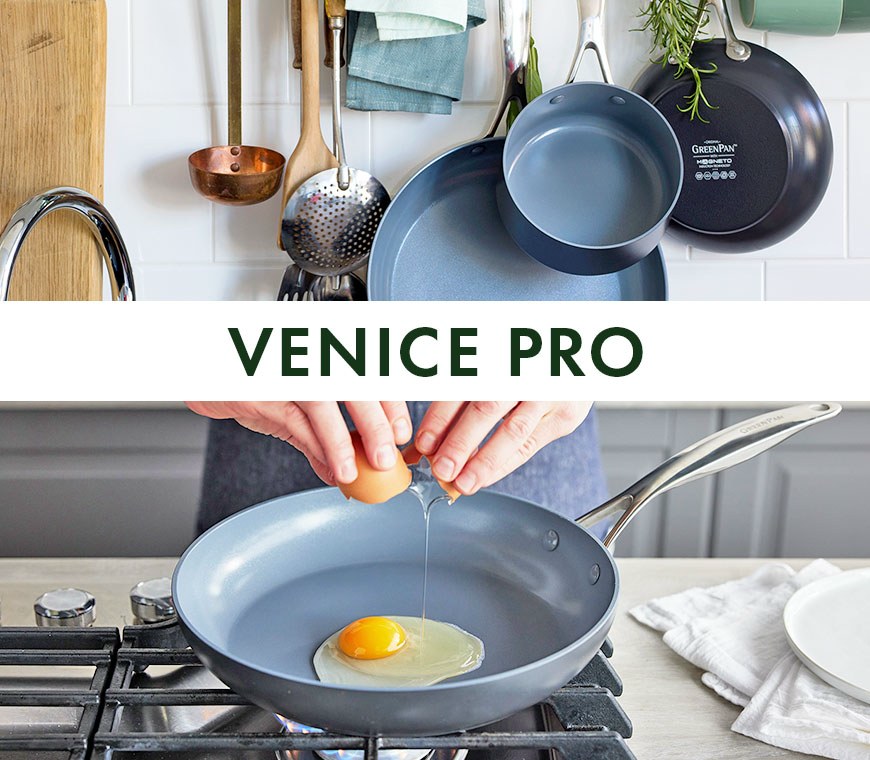
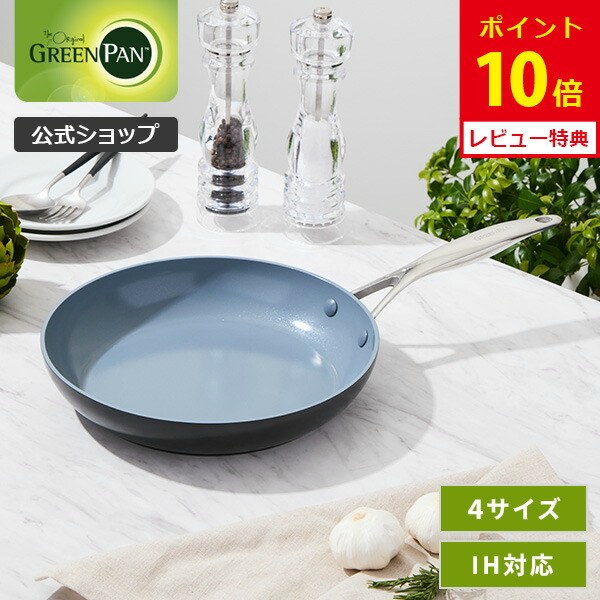
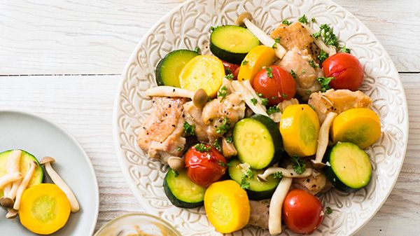

一人暮らしのフライパンは20cm前後から｜サイズ・深さ・熱源・収納など7つの確認点


一人暮らしのキッチンは、収納が小さくコンロも一口か二口ということが多いもの。その中でフライパンは毎日使う道具だからこそ、サイズと置き場所で失敗しやすい道具でもあります。決める順番を先に並べます。
フライパン選びで先に決めるのは、サイズ・深さ・熱源・収納の4点です。一人分中心なら20cm前後、作り置きもするなら24〜26cmが目安。熱源（IHかガスか）の確認だけは、買ってからでは取り返しがつきません。
早見表｜7つのポイント
| ポイント | 見ること | 目安 |
|---|---|---|
| 1. サイズ | よく作る量と、シンク・収納の大きさ | 一人分中心は20cm前後／作り置きは24〜26cm |
| 2. 深さ | 炒める中心か、煮る料理もするか | 炒め物は浅め／汁物も作るなら深型 |
| 3. 熱源 | IH対応かどうか | 商品情報で必ず確認 |
| 4. 収納 | 立てて収納できるか、吊るす場所があるか | 取っ手の向きと全長で判断 |
| 5. 重さ | 片手で振る料理をするか | 公式の製品情報の重量を確認 |
| 6. 買い替え時期 | コーティングと底の状態 | 剥がれ・焦げつき・変形が目安 |
| 7. 選択肢の実例 | 仕様が公表されている製品で当てはめる | この記事ではグリーンパン ヴェニスプロで確認 |
一人暮らしのフライパン、よくある困りごと
置き場所を取る、大きすぎると洗いにくい、小さすぎると炒め物があふれる。焦げつきが目立ってきた、取っ手が場所を取る、買い替えのタイミングが分からない。どれも、買う前にサイズと収納を測っておけば避けやすい困りごとです。
ポイント1〜2｜サイズと深さ
サイズは「よく作る量」と「シンク・収納の大きさ」から決めます。一人分中心なら20cm前後、作り置きや二人分も作るなら24〜26cmが目安です（一般的なサイズ展開の中での目安です）。深さは、炒め物中心なら浅め、煮込みや汁物も作るなら深め（深型）が向きます。深型は、炒め物と煮物を1本で済ませたい一人暮らしと相性がよい形です。

判定：サイズで迷ったら「普段いちばんよく作る一品」を思い浮かべてください。その一品が無理なく作れる大きさが、正解のサイズです。

ポイント3〜5｜熱源・収納・重さ
熱源は必ず確認します。IH対応かどうかは商品情報で確認できる項目で、対応していない製品はIHコンロでは使えません。収納は、取っ手を含めた全長と、立てて収納できるか・吊るす場所があるかで置き方が変わります。重さは、片手で振る料理をするかどうかで体感が変わるため、公式の製品情報に重さの記載があれば先に確認しておくと安心です。
ポイント6｜買い替え時期の目安
コーティングの剥がれが見える、焦げつきが洗っても落ちない、底が変形して安定しない、といった状態は買い替えを考える目安とされます（一般的な目安です）。買い替えのときも、サイズ・深さ・熱源・収納の4点を同じ順番で見直せば、同じ失敗は繰り返しません。自炊全体の負担の減らし方は「自炊が続かない一人暮らしへ」にもまとめています。
ポイント7｜選択肢のひとつとして「グリーンパン ヴェニスプロ」
7つのポイントを、仕様が公表されている製品で当てはめてみます。グリーンパンは、フッ素樹脂を使わないセラミックコーティングの調理器具ブランドで、公式の案内ではPFAS・PTFEを使っていないと説明されています。
| 項目 | 内容（グリーンパン公式楽天市場店の商品ページ） |
|---|---|
| 表面加工 | セラミックコーティング（内面・外面）。ダイヤモンド粒子配合の「セラミック・ノンスティックコーティング」 |
| サイズ展開 | 20cm／24cm／26cm／28cm |
| 20cmの仕様 | 全長37.8×幅20.7×高さ7.8×深さ4.3cm、重量560g |
| 対応熱源 | ガス火・IH（100V/200V）対応。オーブン（本体のみ）・食器洗浄乾燥機も可（手洗い推奨） |
| 価格 | 公式楽天市場店では20cmが8,470円（送料無料）の表示を確認（2026年11月28日） |
20cmで560gは、片手で扱いやすい重さです。全長37.8cmは取っ手を含めた長さなので、収納場所の奥行きと合わせて確認してください。
グリーンパン公式楽天市場店でヴェニスプロを見る（公式ストアへの通常リンク）
セラミックコーティングは、強火での空焚きを避けるなど、製品ごとの使い方の案内に沿うと長持ちします。購入前に公式の取り扱い案内も見ておくと安心です。
よくある質問
- Q. 一人暮らしのフライパンは何cmがいいですか？
- 一人分中心なら20cm前後、作り置きや二人分も作るなら24〜26cmが目安です。シンクで洗える大きさか、収納に立てて入るかも合わせて確認してください。
- Q. IHかどうかはどこで確認しますか？
- 商品情報の「対応熱源」の項目で確認できます。引っ越し先のコンロが変わる可能性がある場合は、IH・ガス両対応の製品が無難です。
- Q. 買い替えのサインはありますか？
- コーティングの剥がれ、洗っても落ちない焦げつき、底の変形が目安です。調理のたびにストレスを感じるようなら、4点の見直しとセットで買い替えを検討してください。

関連｜道具が揃ったら、食材の負担も減らす
自炊が続く仕組みづくり
フライパンなどの道具が揃っても、買い物と献立の負担が残ると自炊は続きにくいものです。食材の一部を宅配に任せる形も含めた、負担を減らす6つの仕組みは「自炊が続かない一人暮らしへ」にまとめています。まず試すなら、定期縛りのない初回おためしが条件の軽い入り口です。
Oisixのおためしセット（1,980円）を公式で見る
判定のまとめ：フライパンは、サイズ・深さ・熱源・収納の4点を先に決めれば失敗しにくい道具です。仕様と価格は公式の公表で確認してから選んでください。
出典：グリーンパン公式楽天市場店の商品ページ（ヴェニスプロの仕様・価格、2026年11月28日確認）／グリーンパン公式の案内（コーティングの説明）。価格は確認時点のもので、変動します。
※このページにはアフィリエイト広告が含まれます（A8.net）。申し込みボタンがあるのは提携済みのOisixのみで、他の会社へのリンクは公式サイトへの通常リンクです。